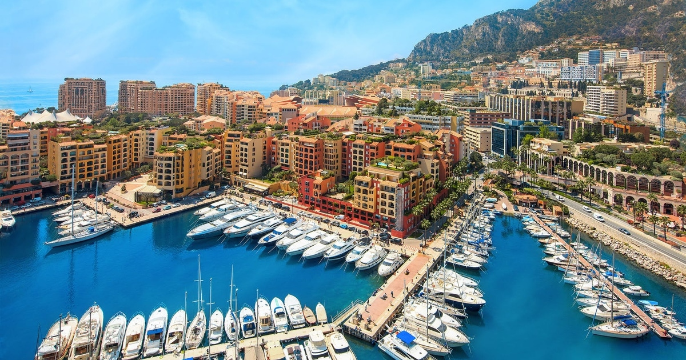
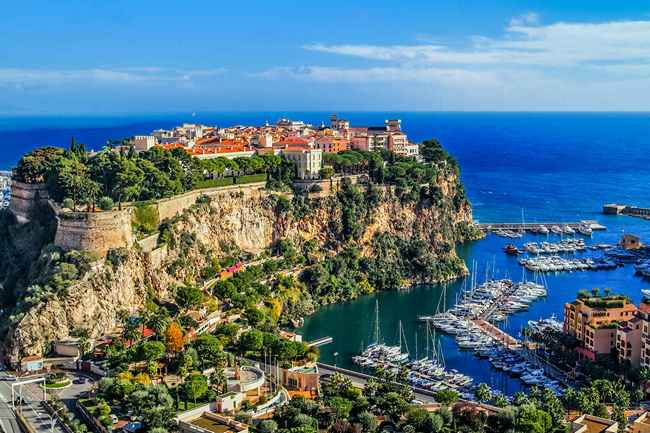

Monaco



Monako jest najmniejszym po Watykanie państwem świata. Monako to państwo-miasto w południowej Europie, nad Morzem Śródziemnym, na Wybrzeżu Lazurowym. Leży 18 km na wschód od francuskiej Nicei.
- Monako-Ville: Stare Miasto na Skale Monakijskiej
- katedra pod wezwaniem Matki Boskiej Niepokalanego Poczęcia
- Monte-Carlo
- Pałac Sprawiedliwości (Palais de Justice)
- Ogród różany księżnej Grace